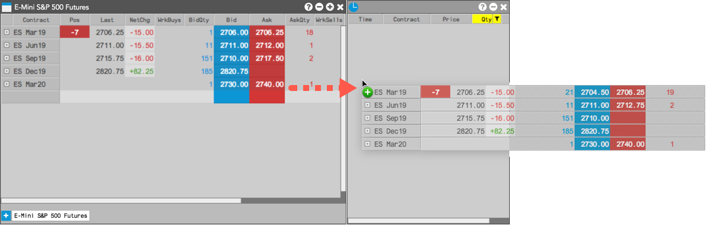

You can drag-and-drop a single instrument or multiple instruments between grid-based widgets. To drag-and-drop a single instrument: select the instrument in the source widget, then drag-and-drop it to another widget.
To drag-and-drop multiple instruments: select each instrument in the source widget using a mouse drag, Shift-click, or Ctrl-click, then drag-and-drop the instruments to another widget.

Widget sources include:
Widget drop locations include: